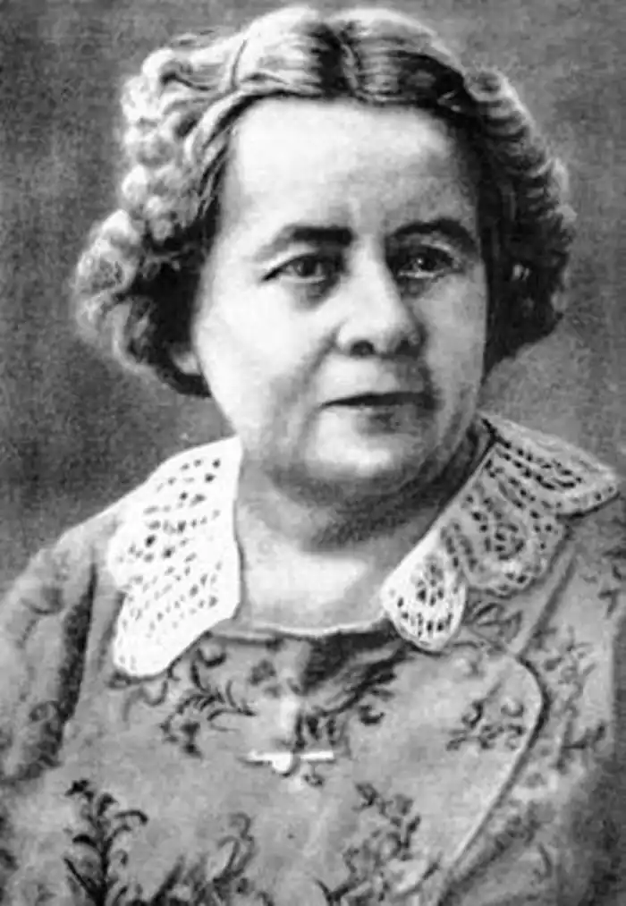

Українська письменниця Зінаїда Павлівна Тулуб народилася 16 (28) листопада 1890 року в Києві в родині Павла Олександровича (1862 – 1923) і Єлизавети Василівни Тулубів (1866 – 1934). Родина була українського походження (дід письменниці – Олександр Данилович Тулуб – у свій час належав до Кирило-Мефодіївського братства, чим Зинаїда дуже пишалась).
Але ця родина була російської культури. Батько її писав вірші російською мовою. Близькими знайомими батьків майбутньої письменниці були російські письменники Іван Бунін та Олександр Купрін. Закінчивши в 1913 році київські Вищі жіночі курси, Зинаїда пробує свої сили в літературі: пише російською мовою вірші та повісті. Ці вірші, як твердять дослідники, несуть сильний вплив поезії І.Буніна. В 1914 році вона познайомилась з Максимом Горьким, який надавав їй дієву допомогу в літературній роботі. Ці контакти тривали аж до смерті М.Горького.
Творчість Зинаїди Тулуб чітко розділяється на три етапи. До першого етапу належать юнацькі твори російською мовою, написані в період до революції 1917 року. Нині ці твори повністю забуті. Українська національно-визвольна революція 1917 – 1922 років справила вирішальний вплив на людську і творчу долю Зинаїди Тулуб. Вона переходить на українську мову і пересотворює себе на свідому українку й українську письменницю, яка збагатила нашу літературу творами непроминальної цінності. Радянська влада цього їй ніколи не простила. Другий етап її творчості припадає на 1926 – 1937 роки. Найважливіший твір цього періоду – історичний роман "Людолови", присвячений історії України доби гетьмана Петра Конашевича-Сагайдачного. Перший том романа був надрукований в 1934 році, другий – в лютому 1937 року. Це було справжнє щастя для нашої літератури, що другий том романа устиг вийти в світ і таким чином зберігся. Адже 4 липня 1937 р. злочинна большевицька влада заарештувала Зинаїду Тулуб (а ми добре знаємо, що рукописи заарештованих найчастіше знищувались). Звинуватили її в тому, що вона "є активною учасницею контрреволюційної організації "Виборчий центр", котра здійснює підривну роботу перед наступними виборами до Рад". Звичайно, така організація, котра, – страшно подумати! – здійснювала конституційне право громадян обирати і бути обраними, існувала лише в чекістських паперах (що пізніше визнали й самі злочинці від влади). Але тоді, в 1937 році, злочинна радянська влада поставилась до цієї справи більш ніж серйозно. Вирок було винесено 5.09.1937 р. найвищою судовою інстанцією – Військовою колегією Верховного Суду СРСР (чому цивільну особу судив військовий суд, нам не відомо): З.П.Тулуб засудити на 10 років тюремного ув’язнення та 5 років заслання, з конфіскацією всього її майна. Так радянська влада розправилась з людиною, яка з росіянки наважилась стати українкою. До 1939 року З.П.Тулуб була ув’язнена в тюрмі в Ярославлі, в 1939 – 1947 рр. перебувала на Колимі, у селищі Сусуман. В 1947 році десятилітній термін ув’язнення скінчився, і її перевели на заслання до Джамбульського району Алма-Атинської області (Казахстан). Але і тут – в степу безкраїм за Уралом – радянська влада не забувала про свідому українку: 16 травня 1950 р. Особлива нарада при міністрі державної безпеки СРСР засудила її на нове заслання, на цей раз – до села Ново-Сухотино (нині – місто Тайинша) Кокчетавської області (Казахстан). Там вона каралась і мучилась аж до 23.06.1956 року, коли та ж Військова колегія того ж таки злочинного Верховного Суду СРСР реабілітувала З.П.Тулуб з обох вироків "за відсутністю складу злочину". Звичайно, цього складу не було в діях З.П.Тулуб ні в 1937, ні в 1950, ні в жодному з тих 20 років, що вона перебувала в неволі. Але радянській владі ходило не про міфічні "злочини", а про знищення української інтелігенції. Третій період творчості З.П.Тулуб почався в 1956 році, коли вона повернулась до Києва і відновила своє членство у Спілці письменників. До цього періоду належать дві редакції роману "Людолови", пов’язані з перевиданнями 1957 і 1958 років, і робота над новим історичним романом – "В степу безкраїм за Уралом" (1959 – 1962), присвяченим долі Тараса Шевченка. Померла Зинаїда Тулуб 26 вересня 1964 р. в Ірпінському будинку творчості, похована у Києві на Байковому цвинтарі.